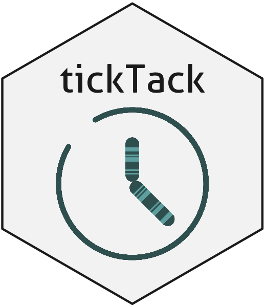

lineaGT 
tickTack is a package to infer kinetic parameters of an evolving population whose size is observed at discrete intervals of time. The tool is able to
time simple CNAs for each segment affected by them
time CNAs in a hierarchical fashion, grouping together segments that most likely underwent a CNA concurrently
Installation
You can install the released version of tickTack from GitHub with:
# install.packages("devtools")
devtools::install_github("caravagnalab/tickTack")